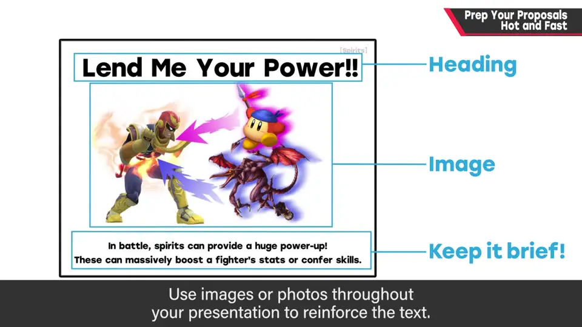
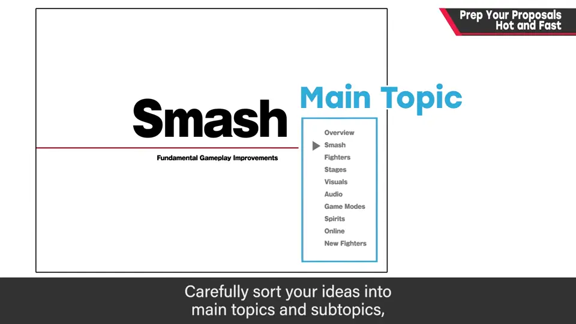
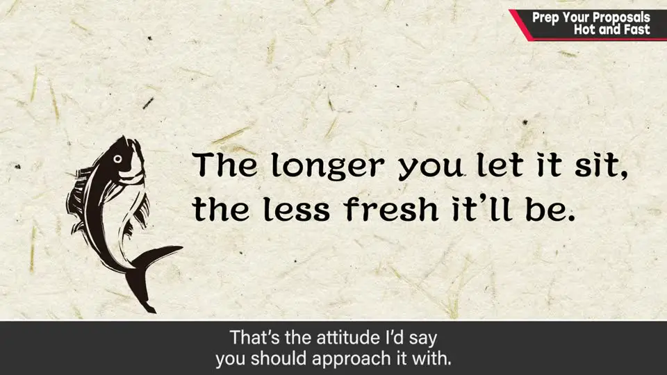

速览
把企划完成的诀窍：写企划书时不要磨蹭。先整理大纲、列出项目（分大项目/小项目），然后一口气整理进演示文档；文字别太长，一定要放图。不需要罗列企划意图——有不有趣才是一切；图表、调研、Plan B 都不需要。趁「想做」的热情高时一口气写出来，拖久了会不新鲜。企划书里很难体现真正的关键（如《怪物猎人》在企划层面并无新意），游戏乐趣很大程度来自打磨。企划没通过时，传达魅力的责任在企划者自己。
1. 写企划书不要磨蹭 0:00
上一集（A-5）讲格式，这期讲「把企划完成」的诀窍。首先：写企划书时不要磨蹭，拖拖拉拉没有任何好处。
- 先整理大纲，列出项目，然后一口气把它们整理进演示文档。
- 要做到这点，事前规划很关键：认真划分大项目/小项目。
- 文字不要写太长；一定要放图片，补强印象。
- 不需要罗列「企划意图」——有不有趣才是一切。
- 图表、调研数据不需要；Plan B 也不需要。只简洁地传达你认为必要的内容。
- 不是页数少就好，而是每一页的信息量是否恰当。

flowchart LR
A["趁想做的热情还高"] --> B["整理大纲"]
B --> C["列出项目
分大项目/小项目"] C --> D["逐页制作：
标题 + 图 + 简短文字"] D --> E["删掉：图表 / 调研 /
Plan B / 冗长意图"] E --> F["快速完成并提交"]
分大项目/小项目"] C --> D["逐页制作：
标题 + 图 + 简短文字"] D --> E["删掉：图表 / 调研 /
Plan B / 冗长意图"] E --> F["快速完成并提交"]

2. 趁热写出来，乐趣靠打磨 1:17

趁着「想做这个企划」的热情高时一口气写出来，别小看这股势头；拖久了新鲜度就会下降。
企划书也有难处：追求乐趣，但真正关键的东西往往体现不在企划书上。例如《怪物猎人》在企划层面就是「狩猎怪物，用素材做装备」，现在看并无新意，实际游戏的优点在纸面上只能体现一部分——也就是说，游戏的乐趣很大程度上来自打磨。
没有企划书就没有作品。请拿出有势头、有冲劲的企划书，让提供资金和人才的一方想「务必做做看」。企划没通过时，别觉得是对方没眼光——传达魅力的责任在企划者自己。
自测题
1. 根据本期，企划书里哪些东西「不需要」？
冗长罗列的企划意图、图表、调研和 Plan B——有不有趣才是一切。 0:49
2. 为什么要趁热写企划书？
趁着想做这个企划的热情高时一口气写出来，别小看这股势头；拖久了新鲜度就会下降。 1:17
3. 樱井举《怪物猎人》想说明什么？企划没通过时应该怎么想？
企划层面它就是「狩猎怪物、用素材做装备」，并无新意，实际游戏的优点在纸面上只能体现一部分——乐趣很大程度来自打磨。企划没通过时别认为对方没眼光，传达魅力的责任在企划者自己。 1:39